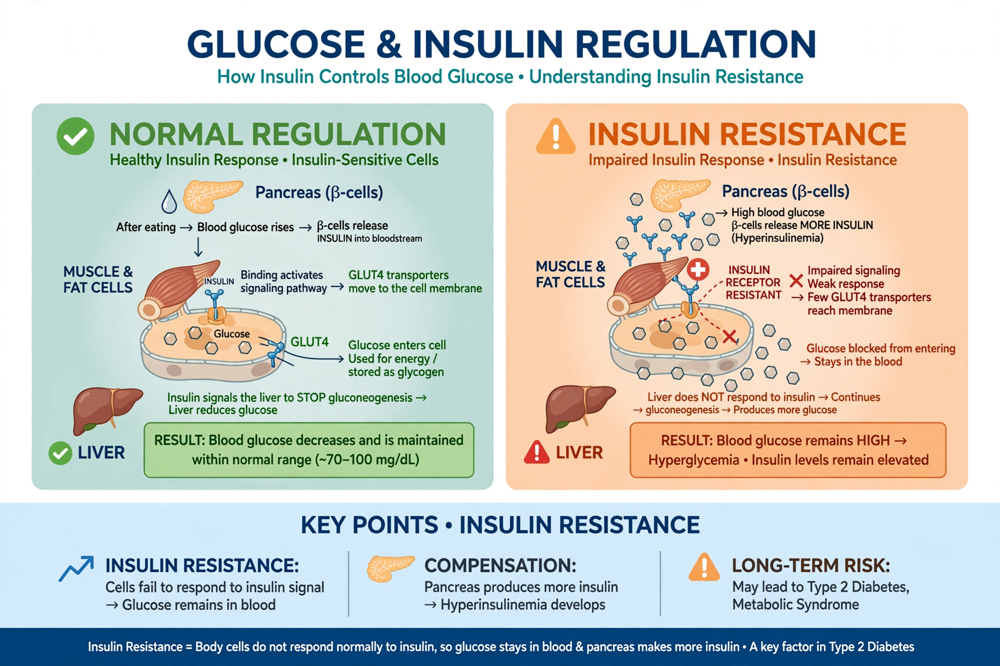

Type 2 diabetes (T2D), formerly known as adult-onset or non-insulin-dependent diabetes, is a form of diabetes mellitus characterised by high blood sugar, insulin resistance, and a relative lack of insulin. It accounts for about 90% of diabetes cases worldwide and is largely the result of excess body weight and physical inactivity in genetically predisposed people. Unlike type 1 diabetes, in which the immune system destroys insulin-producing beta cells, type 2 diabetes develops gradually as body tissues become resistant to insulin and the pancreas fails to compensate.

| Type 2 diabetes | |
|---|---|
| Other names | Diabetes mellitus type 2; adult-onset diabetes |
| Specialty | Endocrinology |
| Symptoms | Increased thirst, frequent urination, fatigue, unexplained weight loss; often none initially |
| Risk factors | Obesity, physical inactivity, genetics, age, metabolic syndrome |
| Diagnostic method | Fasting plasma glucose, HbA1c ≥ 6.5%, oral glucose tolerance test |
| Treatment | Lifestyle changes, metformin, other glucose-lowering drugs, insulin |
| Frequency | ~500 million adults worldwide (diabetes overall, 2021) |
Classic symptoms include increased thirst, frequent urination, increased hunger, fatigue, blurred vision, slow-healing wounds and frequent infections; however, the onset is usually gradual and many people have no symptoms for years, being diagnosed on routine testing. Darkened skin patches (acanthosis nigricans) may signal insulin resistance.
The central defect is insulin resistance in muscle, liver and fat tissue, combined with progressive beta-cell dysfunction. Obesity — particularly visceral adiposity — is the strongest modifiable risk factor, and risk is also higher with age, family history, certain ethnic backgrounds, gestational diabetes, polycystic ovary syndrome and sleep apnoea. Chronic hyperglycaemia damages small and large blood vessels, producing complications including cardiovascular disease, kidney failure, retinopathy and blindness, neuropathy and foot ulcers that may lead to amputation.
Management centres on blood-glucose control, typically monitored by HbA1c, with a common target below 7.0%. Weight loss — including through bariatric surgery — can put early type 2 diabetes into remission. Metformin is the usual first-line drug; other classes include sulfonylureas, DPP-4 inhibitors, SGLT2 inhibitors (which also protect the heart and kidneys), and GLP-1 receptor agonists, which aid weight loss and reduce cardiovascular events. Insulin may be required as the disease progresses. Blood pressure and lipid control are equally important in preventing complications.
Diabetes affected an estimated 537 million adults in 2021, a number projected to keep rising, driven by urbanisation, ageing and obesity. Landmark prevention trials showed that intensive lifestyle intervention — modest weight loss and regular exercise — cut progression from prediabetes to diabetes by more than half, outperforming metformin.
Diabetes · Type 1 diabetes · Metformin · Insulin resistance · Metabolic syndrome
From Wikipedia, the free encyclopedia.